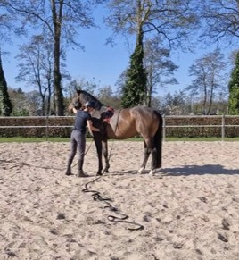

Een fijne basis voor de toekomst
Rustig groeien,
stap voor stap.
Een goede start begint met vertrouwen. Ik begeleid jonge paarden op een rustige en duidelijke manier, passend bij hun ontwikkeling.
Van het leren dragen van een halster tot wennen aan nieuwe ervaringen: we nemen de tijd om je paard stap voor stap vertrouwd te maken met wat er komt kijken bij training.
Ook bij de eerste kennismaking met het zadel bouwen we rustig op. Zo leggen we samen een fijne basis waarop jij en je paard verder kunnen groeien.
Bespreek jullie situatie